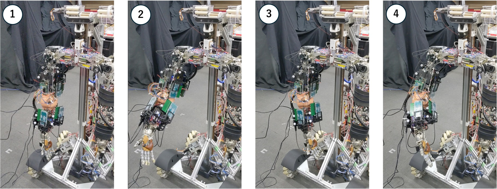
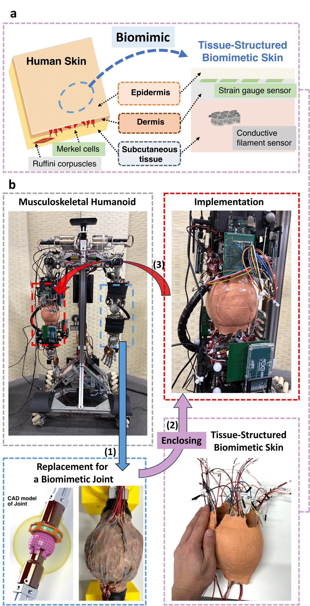
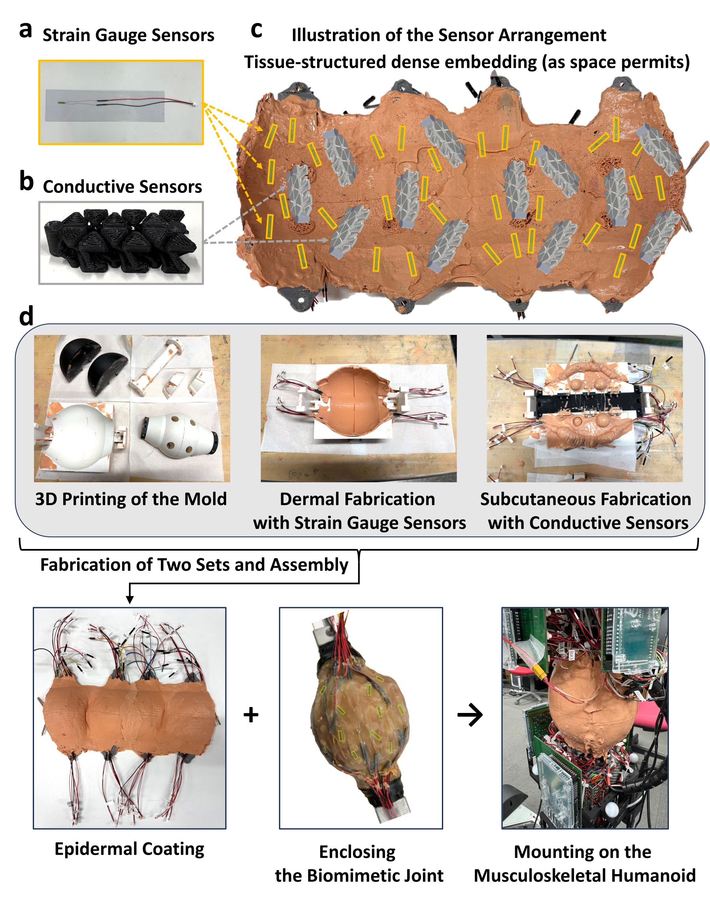
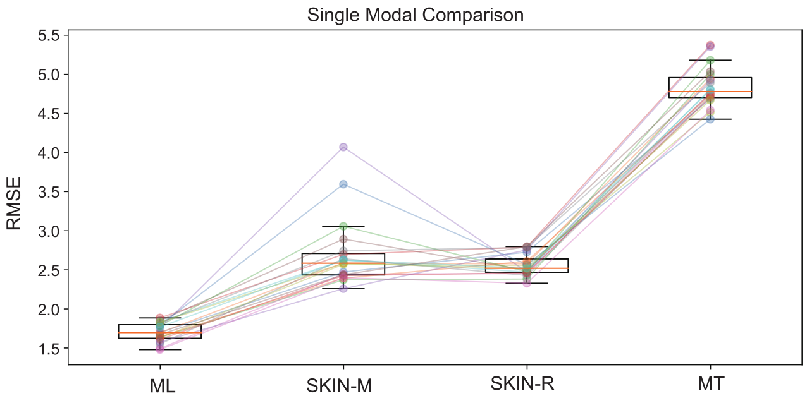
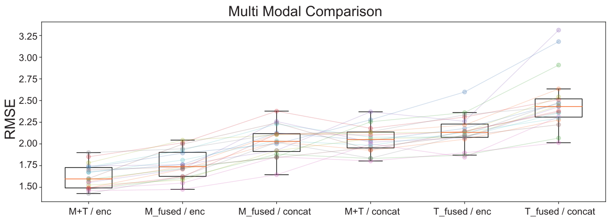
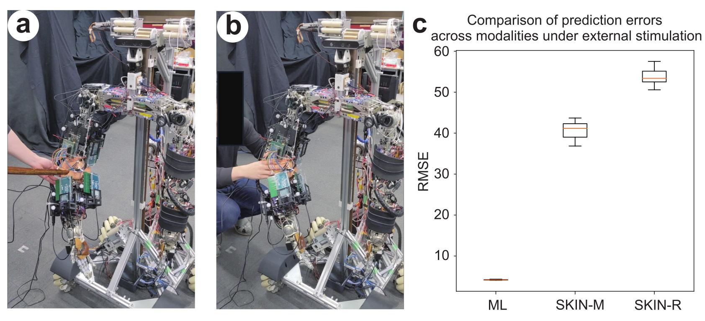

TISSUE-LEVEL BIOMIMETIC SENSING
Design of a Biomimetic Joint-Covering Skin
with Tissue-Like Structure to Enhance Proprioception
in a Musculoskeletal Humanoid
2026 IEEE/RSJ International Conference on Intelligent Robots and Systems (IROS 2026)
The University of Tokyo

Research highlights
3 layers
Epidermis, dermis, and subcutaneous tissue
44 sensors
32 Merkel-like and 12 Ruffini-like elements
1.62° RMSE
Best muscle-and-skin fusion result
Abstract
Proprioception in musculoskeletal humanoids is typically estimated primarily from muscle sensing, while the role of cutaneous deformation around joints remains insufficiently explored. In biological systems, mechanoreceptors distributed within soft tissue complement muscle feedback and support reliable joint state estimation. This study presents the design of a biomimetic joint-covering skin with a tissue-like layered structure that integrates pressure- and stretch-sensitive elements within the joint-covering tissue.
The proposed skin is implemented on the musculoskeletal humanoid Musashi-W, and its independent proprioceptive capability as well as its integration with muscle sensing are evaluated. The skin alone estimates joint angles with an average error of approximately three degrees, while appropriate integration with muscle sensing further improves accuracy. The results also suggest that the joint-covering structure can help protect muscles from direct mechanical disturbances and provide complementary cues for interpreting external contact.
Motivation
Musculoskeletal humanoids are driven by tendons and compliant structures, so their joint angles are not always directly measurable. Existing approaches mainly estimate body state from muscle length and tension. Biological proprioception, however, also draws on mechanoreceptors distributed through the skin and soft tissue around joints. This work asks whether a robot can similarly use deformation of a joint-covering skin as an additional source of body-state information.
Tissue-Structured Biomimetic Skin
The skin reproduces the relative organization of three biological layers: a thin, comparatively stiff epidermis; a compliant dermis; and a softer subcutaneous layer. Strain gauges placed near the epidermis–dermis boundary act as Merkel-cell-like pressure-sensitive elements. Conductive chainmail structures embedded deeper in the subcutaneous layer act as Ruffini-ending-like stretch-sensitive elements.

Fabrication and Implementation
The skin contains 32 strain gauges and 12 conductive stretch sensors. These elements are embedded densely within molded silicone layers, together with fiber bundles that mechanically connect the skin to the skeletal structure. Two fabricated skin components enclose a compliant biomimetic elbow joint and are mounted on the right arm of Musashi-W.

Sensorimotor Data Collection
While the robot moved its right arm through varied postures, the experiment recorded 10 muscle-length signals, 10 muscle-tension signals, 32 Merkel-like skin signals, and 12 Ruffini-like skin signals. Motion capture supplied ground-truth pitch, yaw, and roll angles for the elbow. Approximately one hour of operation produced 615 sensorimotor samples spanning about 50 degrees of motion on each axis.
Proprioceptive Estimation Results
A multilayer perceptron estimated the elbow's three joint angles from each sensing modality. Muscle length achieved the lowest single-modality mean RMSE at 1.70 degrees. Importantly, the two skin modalities independently retained meaningful proprioceptive information: the Ruffini-like and Merkel-like sensors achieved mean RMSE values of 2.56 and 2.69 degrees, respectively.

The study also compared direct concatenation with an encoder-based fusion architecture. Encoder-based fusion of muscle and skin signals achieved a mean RMSE of 1.62 degrees, significantly improving on the muscle-length-only baseline of 1.70 degrees (Holm-corrected p < 0.001). This indicates that skin deformation carries information complementary to muscle sensing when the modalities are integrated with a suitable representation.

Response to External Disturbances
Additional trials applied pushes around the elbow while the robot moved. Models trained without disturbances showed much larger errors for the skin modalities under contact, whereas the muscle-length error increased more moderately from 1.70 to 4.18 degrees. This modality-dependent response suggests a possible cue for distinguishing contact around the joint from changes on the muscle side. The soft covering may also mechanically reduce direct transmission of external forces to exposed muscles.

Scope and Future Work
This prototype is a tissue-level reconstruction rather than a literal reproduction of biological skin: its sensors are larger and less densely distributed than biological mechanoreceptors. The experiments were also performed mainly under quasi-static conditions. Future work will address sensor miniaturization, long-term effects such as hysteresis and drift, dynamic motion, online calibration, and extension of the tissue-structured design to other body regions.
Supplementary Video
The 54-second video summarizes fabrication, sensor responses, proprioceptive estimation, and experiments under external mechanical disturbances. It contains no audio.
BibTeX
@inproceedings{miki2026biomimetic,
title = {Design of a Biomimetic Joint-Covering Skin with
Tissue-Like Structure to Enhance Proprioception
in a Musculoskeletal Humanoid},
author = {Akihiro Miki and Shun Hasegawa and
Yoshimoto Ribayashi and Kento Kawaharazuka and Kei Okada},
booktitle = {Proceedings of the 2026 IEEE/RSJ International Conference
on Intelligent Robots and Systems (IROS)},
year = {2026}
}Contact
For questions about this work, please contact Akihiro Miki at the Department of Mechano-Informatics, The University of Tokyo.